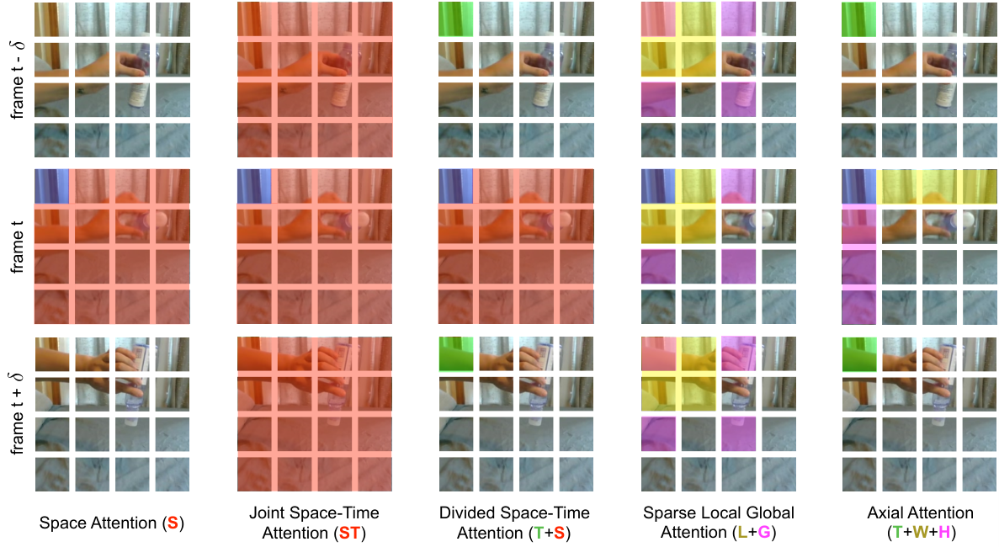
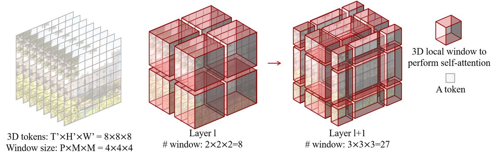
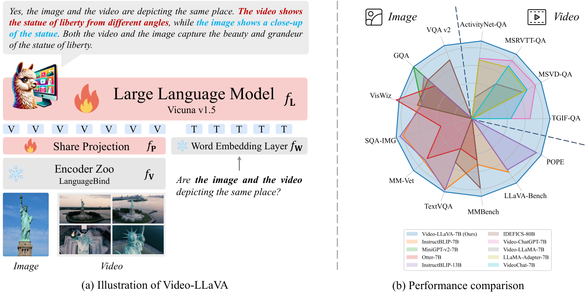
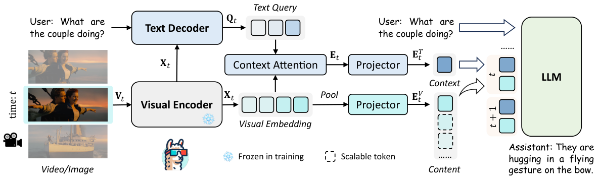
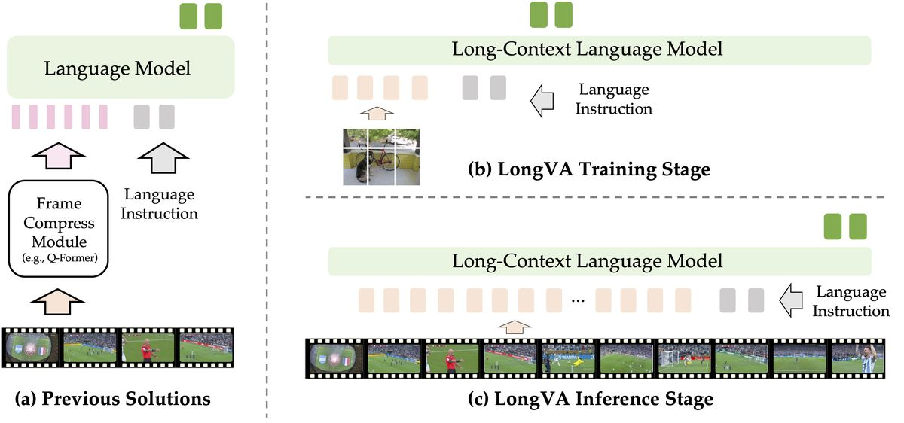
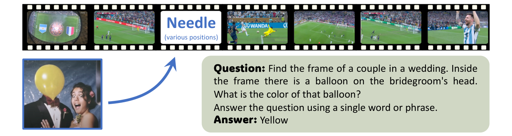
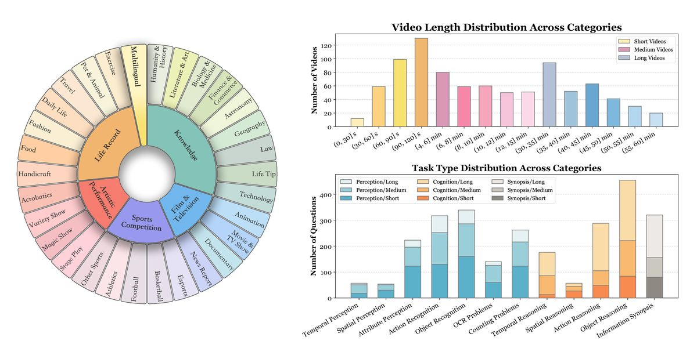
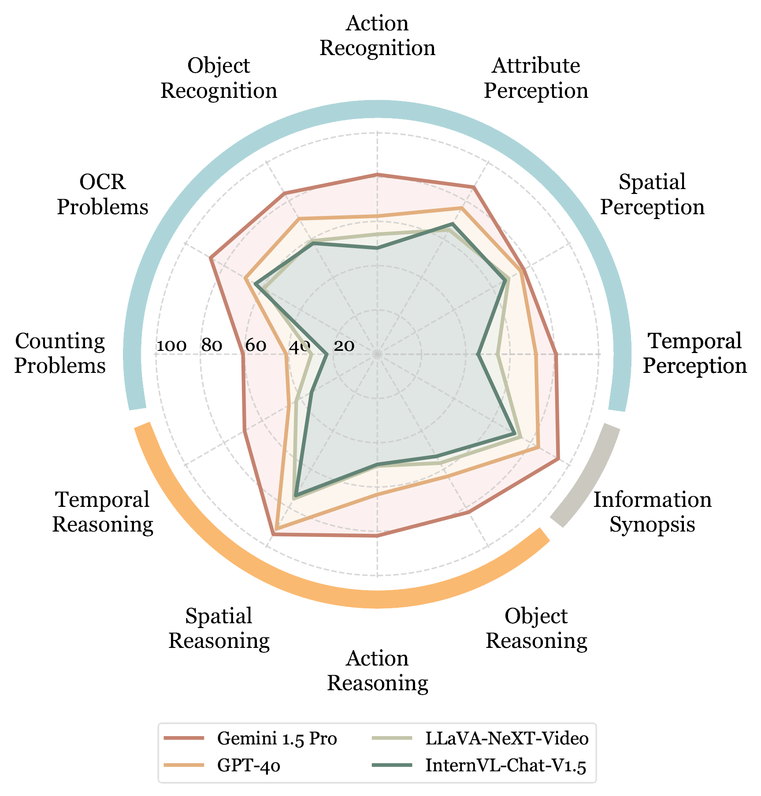

<!DOCTYPE html>
<html lang="zh-CN" data-theme="light">
<head>
<meta charset="UTF-8">
<meta name="viewport" content="width=device-width, initial-scale=1.0">
<title>第 31 章 视频理解大模型 · 多模态大模型 Cookbook</title>
<link rel="stylesheet" href="../assets/css/style.css">
<script>window.MathJax={tex:{inlineMath:[["$","$"],["\\(","\\)"]],displayMath:[["$$","$$"],["\\[","\\]"]]},svg:{fontCache:"global"}};</script>
<script src="https://cdn.jsdelivr.net/npm/mathjax@3/es5/tex-chtml.js" async></script>
</head>
<body>
<div id="progress-bar"></div>
<nav id="sidebar"></nav>
<header id="topbar">
  <button id="menu-btn">☰</button>
  <div id="search-box"><input id="search-input" placeholder="搜索全书…"><div id="search-results"></div></div>
  <div class="topbar-actions"><button class="tb-btn" id="theme-btn">🌓 主题</button></div>
</header>
<main class="content"><div class="article">

<header class="book-header">
  <div class="part-badge">第五部分 · 感知模态扩展</div>
  <h1 class="chapter-title">第 31 章　视频理解大模型</h1>
  <div class="chapter-meta"><span>预计阅读 110 分钟</span><span>难度 ★★★★☆</span><span>前置：第 14–17 章（MLLM 架构与训练）</span></div>
</header>

<div class="toc-mini"><b>本章目录</b><ol>
  <li><a href="#sec-1">视频理解的任务谱系：从分类到流式</a></li>
  <li><a href="#sec-2">专用时代：TimeSformer 与 Video Swin 的注意力设计</a></li>
  <li><a href="#sec-3">MLLM 时代：Video-LLaVA、LLaMA-VID 与帧的诅咒</a></li>
  <li><a href="#sec-4">长视频理解：LongVA 与"针在视频中"</a></li>
  <li><a href="#sec-5">帧采样策略：决定上限的第一决策</a></li>
  <li><a href="#sec-6">流式与实时视频理解</a></li>
  <li><a href="#sec-7">数据与评测：Panda-70M、Video-MME、MVBench</a></li>
  <li><a href="#sec-8">本章小结</a></li>
</ol></div>

<div class="box-tip"><p class="box-title">💡 本章导读</p>
<p>视频理解是"图像 MLLM"的放大镜版本：帧数把 token 数放大一个数量级，时间维度引入"事件"这一新的语义单元，而数据与评测都远不如图像成熟。本章沿"专用双流模型 → 视频版 MLLM → 长视频与流式前沿"推进，核心线索只有一条：<b>如何在算力预算内把时间信息塞进上下文窗口</b>——帧采样、token 压缩、上下文扩展三大件都是这条线索的不同侧面。第 29 章讲"生成视频"，本章讲"看懂视频"——两章合起来才是视频智能的完整版图。</p></div>

<h2 id="sec-1"><span class="sec-no">1.</span>视频理解的任务谱系：从分类到流式</h2>
<p>视频理解的复杂度随"时间交互深度"递增，形成六级谱系：①<b>动作分类</b>（整段视频一个标签：Kinetics"打网球"）——最粗粒度，2018–2021 的主战场；②<b>时序动作定位</b>（哪段是"打网球"：起止时刻）——引入时间坐标；③<b>时刻检索/视频定位</b>（用自然语言查时刻："他拿起杯子是什么时候"）——语言进入时间轴，是视频版 grounding（第 21 章的空间 grounding 的时间姊妹）；④<b>视频问答</b>（VQA：需要理解事件因果）——2023 年后 MLLM 的主战场；⑤<b>长视频理解</b>（小时级：电影/会议/监控——需要跨场景记忆与摘要）；⑥<b>流式理解</b>（视频流边来边答，无"看完"的概念——实时监控、直播助手、具身感知）。<b>每上升一级，模型需要的时间推理深度翻一倍</b>：分类只需"看到了什么"，定位需要"何时"，VQA 需要"先后与因果"，长视频需要"记住并整合"，流式需要"实时取舍"。<b>选购或自研前，先确认你在谱系的哪一级——上一级的技术红利不会自动带到下一级</b>。</p>
<p>六级谱系也决定了<b>"视频理解"这个词的歧义管理</b>：与甲方/团队沟通时，说"我们要做视频理解"等于没说——用谱系锚定："做时刻检索（第③级），命中窗口±2 秒，准确率 85%"才是可评审的需求。本书后续的 Agent 章节（第 43 章）会复用这个谱系：Agent 的"看视频"能力通常只到第③级（找时刻）+第④级（答因果），第⑤⑥级是 2026 年的前沿能力——<b>谱系同时是技术地图与预期管理工具</b>。</p>
<p>谱系不只是学术分类——它直接对应<b>商业价值密度</b>：分类与定位（监控告警、内容审核）是存量市场，单价低但量大；时刻检索（视频编辑素材定位、体育集锦生成）是增量市场；长视频问答（企业知识库、网课助教）客单价最高；流式（直播电商助手、AR 眼镜）是 2026 年后的期权。<b>技术投资应沿"谱系上升方向"布局</b>：高级任务的能力建设（长视频、流式）会自然覆盖低级任务（用一个长视频 QA 模型做审核分类绰绰有余），反向不成立。</p>
<div class="box-theory"><p class="box-title">📐 理论：为什么"时间"比"空间"更难</p>
<p>三个不对称性：①<b>信息密度不对称</b>——相邻帧相似度 95%+（冗余远超图像 patch），均匀编码浪费；关键信息集中在<b>稀疏的时刻</b>（动作发生的那几秒），最优编码应该是"非均匀采样"，但"哪里重要"依赖语义——鸡生蛋问题。②<b>结构不对称</b>——空间有网格先验（局部性），时间轴只有顺序+因果（"谁先谁后"是硬约束，方向不可交换），位置编码必须是<b>有向的</b>（RoPE 单向/时间嵌入单调）；③<b>监督不对称</b>——图像有 50 亿级对齐数据，视频-文本对少 100 倍且 caption 普遍只描述"画面"不描述"事件顺序"（"一个女人在做饭"无法教模型先后）。<b>这三个不对称性解释了视频 MLLM 的所有主要设计选择</b>：帧采样（应对①）、时间 RoPE/池化（应对②）、合成时序数据（应对③）。</p></div>

<p>把谱系中三级的"标注形态"摊开看，能更准确理解其难度来源：<b>定位任务</b>的标注是时间区间（人工拉时间轴，一个视频约 2 分钟标注成本），数据集（ActivityNet/Charades）量级在 2 万级——决定了专用定位模型的上限；<b>时刻检索</b>的标注是"句子-区间"对（成本再翻倍），数据集更小——所以该任务的进步大头来自"预训练对齐"而非"任务监督"；<b>VQA</b> 的标注是问答对（成本最低、可众包+合成），数据增长最快——这解释了为什么 2023 年后 VQA 跑得最快：<b>任务进步的速度 = 数据供给速度，标注成本是第一性的约束</b>。选择研究/产品方向时，先看该任务的数据经济学，再看模型能力。</p>
<h2 id="sec-2"><span class="sec-no">2.</span>专用时代：TimeSformer 与 Video Swin 的注意力设计</h2>
<p>ViT 成功后，"怎么把注意力搬到视频上"成为 2021 年的核心问题。<b>TimeSformer</b>（arXiv:2102.05095）系统对比了五种时空注意力方案：纯空间、联合时空、分块、<b>分离式空间-时间（divided space-time，每层先空间后时间）</b>、纯时间——结论：分离式在精度/算力比上最优（联合注意力的 $O((THW)^2)$ 代价太狠，分离式只需 $O(THW \cdot HW + THW \cdot T)$）。<b>Video Swin</b>（arXiv:2106.13230）则把 Swin 的移动窗口从 2D 扩到 <b>3D 时空窗口</b>（$2{\times}7{\times}7$ 的 T×H×W 窗口+循环移位），用"3D 局部性+跨窗口交互"逼近联合注意力效果。<b>这两个方案的哲学对立延续至今</b>：分解式（省算力、时间信息后置）vs 局部联合（时间空间早期融合、算力贵）——第 29 章视频生成里"分解注意力 vs 全 3D 注意力"的路线之争，在理解侧提前上演过一次。<b>专用时代的天花板</b>：Kinetics 分类刷到 85%+ 后停滞——分类任务的监督信号太弱（一个标签），无法产生对话、推理、定位等通用能力，被 MLLM 替代是必然。</p>
<p><b>专用时代留给今天的遗产</b>：其一，<b>双流 CNN（two-stream）的"光流分支"传统</b>——运动显式建模的思想虽被端到端注意力吸收，但"运动是独立信息源"的判断至今正确（光流在运动小目标检测上仍是强特征）；其二，<b>CLIP4Clip 式帧级 CLIP 检索</b>——把视频当"帧集合"做文本检索，是今天多模态 RAG 视频检索层的直接祖先；其三，<b> Kinetics/H HowTo100M 等数据集的标注协议</b>定义了"视频任务长什么样"。技术更迭极快，但"任务定义与数据协议"的半衰期长得多——<b>读旧论文先看它定义了什么任务、贡献了什么数据，再决定要不要深挖方法细节</b>。</p>
<p><b>分离式注意力的数学账</b>：设每帧 $HW$ 个 token、共 $T$ 帧。联合时空注意力每层计算 $T^2H^2W^2$ 的注意力矩阵；分离式拆成"空间注意力 $T$ 次（各 $H^2W^2$）+ 时间注意力 $HW$ 次（各 $T^2$）"，总量 $TH^2W^2 + HWT^2$。代入 $T{=}16, HW{=}196$（ViT-B 配置）：联合 $pprox 16^2{	imes}196^2{pprox}9.8	imes10^6$，分离 $pprox 16{	imes}196^2+196{	imes}16^2pprox 6.6	imes10^5$——<b>约 15 倍差距</b>。这就是 2021 年"联合注意力根本训不起"的算术背景；也是第 29 章视频生成直到 2024（算力+FlashAttention 成熟）才敢上全 3D 注意力的原因。</p>
<p><b>先算清"帧的诅咒"这笔账</b>：假设视觉侧沿用图像 MLLM 的典型配置（每帧 576 token，SigLIP 27×20 grid），10 秒 30fps 视频共 300 帧——全部编码是 17 万 token，超过多数 LLM 的窗口；就算抽帧到 1fps 的 10 帧，也要 5760 token，是单张图的 10 倍。<b>这不是工程优化问题，而是结构性矛盾：视频的信息密度（每秒）低于图像，token 成本却线性叠加</b>。专用时代用"3D 卷积+池化"暴力压（Video Swin 把 4×4×4 patch 合一），MLLM 时代的三条路线（对齐前置/压缩/长上下文）本质上都是对这个矛盾的回应。<b>记住这笔账，本章所有设计选择都变得可预测</b>。</p>
<div class="fig-row">
<figure class="fig">

<figcaption>图 31-1　TimeSformer 对比的五种注意力方案（arXiv:2102.05095 图 2）：每行展示输出 token 对输入帧的注意力分布——(a) 纯空间只看当前帧；(e) 分离式时空先看帧内再看跨帧，兼顾算力与时间建模。这份消融图定义了此后三年视频 Transformer 的默认选择。</figcaption>
</figure>
<figure class="fig">

<figcaption>图 31-2　Video Swin 的 3D 移动窗口（arXiv:2106.13230 图 3）：在 T×H×W 三个维度上做窗口划分与循环移位，让时间相邻性与空间相邻性在同一种机制里被建模——"局部联合"路线的代表。</figcaption>
</figure>
</div>

<p><b>为什么 CNN 时代的光流双流会被 Transformer 单流取代？</b>双流网络（Simonyan & Zisserman, 2014：RGB 流+光流流）统治了 2014–2018 的动作识别，光流分支贡献了 30%+ 的精度提升，但有三个死穴：光流预计算贵（实时系统无法承受）、光流估计本身有误差天花板、两路特征融合设计复杂。Transformer 时代用"大数据+自注意力"替代"显式运动估计"：Kinetics 400 上足够的样本让模型隐式学会运动模式（Video Swin 85%+ 精度无需光流）。<b>这个"显式先验被规模化隐式学习替代"的剧本与 NLP 中"句法分析器被 BERT 替代"完全同构——凡是能从数据中学到的先验，最终都会被数据取代</b>。但注意边界条件：数据分布覆盖不到的场景（罕见动作、监控俯视视角），显式先验（光流、3D 几何）仍是性价比最高的补丁。</p>
<h2 id="sec-3"><span class="sec-no">3.</span>MLLM 时代：Video-LLaVA、LLaMA-VID 与帧的诅咒</h2>
<p>LLaVA 范式（第 15 章）向视频迁移的最早尝试是"逐帧编码+池化拼接"，很快遇到<b>帧的诅咒</b>：8 帧×256 token=2k token 尚可，64 帧就是 16k——上下文爆炸且注意力被冗余帧稀释。三条主流突围路线：<b>①对齐前置派</b>——Video-LLaVA（arXiv:2311.10122）的核心主张是"图像与视频共享语言对齐空间"：用 LanguageBind 统一编码器把图文视频绑进同一表征空间，联合训练图像与视频指令数据（相互迁移），证明"对齐先行"优于"模态各自为战"；<b>②token 压缩派</b>——LLaMA-VID（arXiv:2311.17043）给每帧只保留两个 token：context token（视觉内容）+ content token（按用户问题生成的问题相关表征），把 1 小时视频压到几千 token——"问答感知的压缩"是它对后续长视频模型的最大启示；<b>③长上下文蛮力派</b>——直接把帧数拉满靠上下文长度硬扛（第 4 节 LongVA）。<b>MovieChat</b>（2024）则针对电影级长视频提出"记忆融合"：短时记忆（相邻帧细节）+长时记忆（全景摘要）+可退化的 token 合并机制，是"分层记忆"路线的早期代表。<b>共同规律</b>：视频 MLLM 的分化点不在 LLM 侧（大家用相似的底座），全在<b>"视觉 token 的生产与管理"侧</b>。</p>
<div class="box-code"><p class="box-title">💻 代码：用 Video-LLaVA 类模型做"逐帧 vs 联合"的对照实验</p>
<pre><code class="language-python"># 视频理解系统最常见的设计选择：帧如何进 LLM？
# 方案 A：逐帧独立编码（图像 MLLM 循环 N 次）→ 拼接 [帧1_tok, 帧2_tok, ...]
# 方案 B：时序联合编码（视频编码器一次前向）→ [视频_tok]
# 对照实验设计（自建金标 100 题）：
import numpy as np
def eval_scheme(scheme, benchmark):
    accs = {"短(≤60s)": [], "中(1-10min)": [], "长(>10min)": []}
    for q, video, ans, bucket in benchmark:
        pred = scheme(video, q)                 # A 或 B
        accs[bucket].append(judge(pred, ans))   # LLM 判卷或精确匹配
    return {k: float(np.mean(v)) for k, v in accs.items()}
# 典型结论（社区复现趋势）：
#   短视频：A≈B（帧独立够用）
#   中视频：B>A 5-10 分（时序关联开始重要）
#   长视频：A 系统性崩（帧间无通信+token 爆炸），B 靠压缩存活
# 工程含义：>=1 分钟的视频，"时序联合编码"不是优化项而是必需品</code></pre>
<p>这个对照实验的价值在于<b>用自建数据回答架构问题</b>：论文基准的结论未必适配你的场景（监控视频与 Vlog 的时序密度天差地别），100 题金标+两方案对照的成本极低而决策价值极高。</p></div>
<div class="fig-row">
<figure class="fig">

<figcaption>图 31-3　Video-LLaVA 的联合训练框架（arXiv:2311.10122 图 2）：图像与视频经 LanguageBind 编码器进入同一对齐空间，再与语言侧联合训练——图文视频互相迁移（"互相成就"）。对齐质量前置决定下游指令遵循上限的主张由此确立。</figcaption>
</figure>
<figure class="fig">

<figcaption>图 31-4　LLaMA-VID 框架（arXiv:2311.17043 图 2）：每帧经两个 query 生成 context token（内容概要）与 content token（针对问题的相关表征），超长视频以每帧 2 token 的代价进入 LLM——压缩比数百倍而关键信息保留。</figcaption>
</figure>
</div>

<p><b>被忽视的第五条路线：音频辅助</b>。视频天然带声轨——ASR 转录的语音内容是最强的"免费 dense caption"（Panda-70M 的核心 trick），对话类视频里"说了什么"往往比"画面有什么"更接近问题答案。Video-LLaMA 最早接入音频塔，后续多数模型反而砍掉了它（管线复杂度考虑），只在需要时以"外挂 ASR 文本"形式回流。<b>工程建议</b>：不要把音频当模态问题，把它当数据增强——离线转录入库，查询时文本+画面双通道召回，在线精读时把相关语音段作为文本上下文给 LLM。这个"降维使用"避开了音视频联合训练的复杂度，保留了 80% 的收益。</p>
<p><b>早期尝试的教训也值得记</b>：Video-LLaMA（2023.08，DALVA）是最早的视频 LLM 之一，采用"视觉+音频双编码器、两层 Q-Former、图像视频分别对齐"的复杂架构，验证了"视频能对话"但已暴露两大问题——桥太复杂导致对齐不充分、帧数太少（8 帧）时间理解浅。其继任者们的进化方向惊人一致：<b>桥简化（Q-Former→MLP）、帧数加大（8→64→数百）、对齐前置（先绑模态再做指令）</b>。2023–2024 这一年的架构探索期，本质是把图像 MLLM 的"简单桥+大数据"结论在视频上重新证明了一遍——<b>每个模态都要付一次"学费"，但学费逐年降低</b>（视频只花了一年，音频半年，第 30 章）。</p>
<p><b>三条路线怎么选？</b>给出 2025 年的工程口径：<b>数据与算力充足、追求极致精度</b>→长上下文蛮力（Qwen2.5-VL 类，数百帧直喂，推理贵但效果上限最高）；<b>视频极长（>30 分钟）、查询多样化</b>→RAG 混合（离线索引+在线精读，成本可控性最好）；<b>端侧/低延迟</b>→压缩派（每帧 2 token 或 memory token，牺牲部分精度换吞吐）。三条路线并非互斥——生产系统常见"压缩后的帧进长上下文，检索负责筛选"的组合。<b>还有一个隐秘的第四要素：时间戳标注</b>。实验反复显示，在视觉 token 中插入时间戳文本（"第 3 分 12 秒"）能显著提升时刻类问题的准确率——时间信息不仅存在于画面里，也应该显式注入序列中。</p>
<div class="box-code"><p class="box-title">💻 代码：Qwen2.5-VL 的长视频问答（含帧采样与时间戳）</p>
<pre><code class="language-python">from transformers import Qwen2_5_VLForConditionalGeneration, AutoProcessor
from qwen_vl_utils import process_vision_info
import torch

model = Qwen2_5_VLForConditionalGeneration.from_pretrained(
    "Qwen/Qwen2.5-VL-7B-Instruct", torch_dtype=torch.bfloat16,
    attn_implementation="flash_attention_2").to("cuda")
proc = AutoProcessor.from_pretrained("Qwen/Qwen2.5-VL-7B-Instruct",
                                     max_pixels=768*28*28)  # 控制每帧 token

messages = [{"role": "user", "content": [
    {"type": "video", "video": "meeting_hour.mp4",
     "fps": 0.5,                       # 每两秒一帧（长视频低帧率）
     "max_frames": 256},               # 帧数上限，按上下文预算调
    {"type": "text", "text":
     "会议中关于预算审批的讨论发生在哪些时间点？结论是什么？请给出时间戳。"},
]}]
text = proc.apply_chat_template(messages, tokenize=False, add_generation_prompt=True)
imgs, vids, kwargs = process_vision_info(messages)   # 自动抽帧+时间戳注入
out = model.generate(**proc(text=[text], images=imgs, videos=vids, **kwargs),
                     max_new_tokens=512)
print(proc.batch_decode(out, skip_special_tokens=True)[0])
# 关键点：fps 与 max_frames 决定 token 预算；模型输出自带 mm:ss 时间戳
# （Qwen2.5-VL 用绝对时间对齐训练，时刻定位是原生能力而非后处理）</code></pre>
<p>工程要点：①fps×时长>max_frames 时按均匀+边界混合抽帧；②长视频务必开 flash-attention-2（万级视觉 token 的注意力显存差 5–10 倍）；③时间戳问题的答案要人工抽查时间轴对齐质量——"时间戳幻觉"（时刻对内容错）是长视频 QA 的典型翻车点。</p></div>
<p><b>2024–2026 的后继演化</b>把三路线推向成熟：Video-LLaVA 的"对齐前置"被 LanguageBind 系与后续"模态统一编码"工作继承，成为预训练阶段的标准动作；LLaMA-VID 的"每帧 token 预算"思想演化为"动态 token 预算"——重要帧多给、冗余帧少给（如 Qwen2.5-VL 的动态分辨率、InternVL 的像素 shuffle 分级）；MovieChat 的分层记忆则生长为 Video-XL、LongVU 等专门的"长视频 token 管理"子领域。<b>另一个不可忽视的支流是"帧集合 vs 原生时序"之争</b>：帧级处理派（把视频当图像序列）工程简单、复用图像能力；原生时序派（3D tokenizer，如第 29 章的 3D VAE 复用于理解）信息完整但训练贵。2025 年的天平开始向"原生时序"倾斜（闭源旗舰全部原生处理视频帧流），开源侧因算力原因仍是帧级为主——<b>理解侧正在重演生成侧"从帧级到原生"的迁移，滞后约一年</b>。</p>
<h2 id="sec-4"><span class="sec-no">4.</span>长视频理解：LongVA 与"针在视频中"</h2>
<p>长视频（>10 分钟）理解在 2024 年成为独立战场。<b>LongVA</b>（Long Vision Language Assistant，arXiv:2406.16852）的关键发现是"<b>LLM 的长上下文能力可以直接免费迁移给视觉</b>"：用长文本扩展技术（第 38 章的 NTK/YaRN 类）把 LLM 扩到 200k+ token 后，视觉侧无需重训即可一次塞入 200+ 帧、约 1.5 小时的视频——因为视觉 token 对 LLM 而言只是"另一种外语"，长语言上下文练出来的"注意力耐力"自动适用于视觉序列。评测方面，LongVA 提出 <b>V-NIAH（Video Needle in a Haystack）</b>：把一张"针"图像（特定的绿叶/奥运五环）埋进几小时视频的海里，考模型能否找到——这是 LLM 的 NIAH 评测（第 38 章）在视频上的直译，此后成为长视频模型的必考题。<b>长视频的三大技术路线现状</b>：①<b>长上下文蛮力</b>（LongVA/Qwen2.5-VL 长版）——简单有效但算力贵，适合分钟级；②<b>分层记忆/摘要</b>（MovieChat、Video-XL 的 memory token）——小时级可行，但摘要丢细节；③<b>RAG 式检索</b>（先 clip 级检索再精读，第 42 章多模态 RAG 的视频特例）——工业界最实用，但"检索召回率"成为新瓶颈。<b>2026 年共识：小时级理解没有银弹，三路线混用（检索定位+记忆压缩+局部精读）是工程最优解</b>。</p>
<div class="fig-row">
<figure class="fig">

<figcaption>图 31-5　LongVA 的核心洞察（arXiv:2406.16852 图 1）：视觉 token 数与文本 token 数的"上下文守恒"——语言侧扩展到 200k token 后，200 帧视频（约 28k 视觉 token）无需视觉侧改造即可直接容纳，"语言耐力"免费迁移给视觉。</figcaption>
</figure>
<figure class="fig">

<figcaption>图 31-6　V-NIAH 评测设计（arXiv:2406.16852 图 3）：把 needle 图像埋入数小时" haystack"视频（以重复无意义的剪辑填充），模型需回答与针相关的问题——长视频版大海捞针，暴露"注意力稀释"问题（needle 越靠后越难）。</figcaption>
</figure>
</div>
<div class="box-tip"><p class="box-title">💡 技巧：视频 QA 的"问题分类→策略路由"</p>
<p>上线视频问答时，先给问题分类再路由策略，比"一个大模型包打天下"便宜得多：①<b>存在性/计数类</b>（"有没有人摔倒"）→帧级检测+CLIP 检索，无需 LLM；②<b>时刻类</b>（"什么时候发生"）→时刻检索模型或 Qwen2.5-VL 时间戳输出；③<b>因果/解释类</b>（"为什么他会输"）→长上下文 MLLM 精读；④<b>全局摘要类</b>（"这段讲了什么"）→分层摘要管线（便宜）。生产数据显示 60–70% 的真实问题是①②类——<b>用便宜策略处理大多数流量，贵模型只服务高价值问题</b>，整体成本能降一个数量级。</p></div><p>路由器本身用"问题分类器"（small LM 或规则+关键词）实现即可，误路由的代价不对称：把"存在性问题"误路由到长上下文 MLLM 只浪费钱，把"因果问题"误路由到帧检测则答错——<b>路由阈值应向"贵但对"倾斜</b>。</p><p>另一个实用技巧：把"问题类型识别"与"命中预估"合并——路由器同时输出"预计相关片段数"，片段数>20 的问题自动升级为两阶段（先摘要后精读），避免单轮上下文爆量。</p>
<div class="box-paper"><p class="box-title">📄 论文精读：LLaMA-VID 的"问答感知压缩"（arXiv:2311.17043）</p>
<p><b>问题</b>：视频 token 预算是常数，但"重要内容"依赖问题——"他穿的什么颜色"需要看人物帧，"背景音乐"需要看环境帧。<b>方案</b>：双 query 机制——context token 用固定 query 提取（与问题无关的内容概要，可缓存复用）；content token 的 query 由<b>用户问题经 LLM 投影生成</b>（问题相关表征）。<b>效果</b>：每帧 2 token，1 小时视频约 7200 token（对 LLM 毫无压力），在 ActivityNet-QA 等长视频 QA 上超同级模型。<b>深远影响</b>：确立了"压缩时看问题"（query-aware compression）的设计范式——后续的 Q-Former 变体、token 合并（ToMe）改进版、多模态 RAG 的"问题引导重排"都是它的思想后裔。<b>局限</b>：每换一个问题要重算 content token（不能一次编码多次问答）；多轮对话场景需要缓存策略。<b>面试考点</b>：为什么 context token 可以缓存而 content token 不行？——前者与问题无关（数据侧性质），后者是问题的函数（每次不同）。</p></div>

<p><b>上下文经济学</b>：长上下文的成本不只是显存——注意力的 KV cache 随 token 数线性增长（128k token 的 7B 模型 KV cache 约 16GB bf16），服务吞吐随之下降 2–4 倍。<b>三个缓解件</b>：GQA/MQA（KV 头共享，cache 缩 4–8 倍）、滑动窗口+全局 token 混合注意力（StreamingLLM 思想）、KV cache 量化（int8/int4，精度损失可控）。<b>选型时把"峰值并发下的 KV cache 显存"算进 TCO</b>——长上下文模型的贵，一半贵在 KV。</p>
<div class="tbl-wrap"><table>
<caption>表 31-A　长视频理解三路线对比（2025 工程口径）</caption>
<thead><tr><th>路线</th><th>代表</th><th>可处理时长</th><th>在线成本</th><th>主要损耗</th><th>适用</th></tr></thead>
<tbody>
<tr><td>长上下文蛮力</td><td>LongVA、Qwen2.5-VL</td><td>≤1.5 小时</td><td>高（token 数线性）</td><td>注意力稀释、贵</td><td>高精度查询</td></tr>
<tr><td>分层记忆/摘要</td><td>MovieChat、Video-XL</td><td>电影级（2h+）</td><td>中</td><td>细节丢失（摘要税）</td><td>剧情/摘要类</td></tr>
<tr><td>RAG 式检索+精读</td><td>多模态 RAG 系统</td><td>不限（库级）</td><td>低（检索+局部）</td><td>召回率瓶颈</td><td>企业视频库问答</td></tr>
</tbody></table></div>
<p><b>小时级理解的 token 数学</b>：1 小时视频按 1fps 采样=3600 帧；每帧压到 196 token（激进池化）也要 70 万 token——超出所有开源 LLM 窗口 3 倍以上。因此"纯蛮力"路线在小时级都做了两级妥协：帧率降到 0.1–0.2fps（360–720 帧）+每帧 100–200 token（7–15 万 token，勉强塞进 128k 窗口）。<b>妥协的代价是时间分辨率降到 5–10 秒级</b>——快动作、短事件全部丢失。这解释了为什么"检索+精读"的 RAG 结构在库级场景不可替代：<b>全局用粗粒度索引，局部用高分辨率精读，分辨率与覆盖度的矛盾在系统层解决，而非模型层硬扛</b>。</p>
<p><b>LongVA 的"免费迁移"再深挖一层</b>：为什么语言侧的长上下文能力对视觉序列有效？三个条件：①视觉 token 与文本 token 共享同一注意力机制与 RoPE 位置编码（Qwen 架构系天然满足）；②长文本训练让注意力学会"在超长序列中检索与聚焦"（这个元技能与 token 内容无关）；③视觉 token 的信息分布（稀疏关键帧+大量冗余）与长文本（关键句+水词）结构相似——注意力模式可复用。<b>反例同样有信息量</b>：如果视觉 token 的位置编码用了独立的模态轴（MRoPE 第 3 维），长语言上下文对该维度无训练痕迹，"免费迁移"就会打折——Qwen2-VL 系列为此在长视频训练中专门加大时间维的覆盖范围。<b>"迁移是否免费"取决于架构参数化是否共享——这是架构设计者的责任，不是训练的运气</b>。</p>
<div class="box-paper"><p class="box-title">📄 论文精读：Video-XL 的 memory token（arXiv:2409.14485）</p>
<p><b>思路</b>：把"记忆管理"做进视觉 token 层——训练一个"视觉摘要器"，把每 N 帧压缩为少量 memory token（类似 CPU 的 L1/L2 缓存层级：近处帧全 token、远处帧 memory token、更远处仅全局摘要），LLM 在压缩后的"分层记忆序列"上做注意力。<b>关键设计</b>：memory token 的压缩器与 LLM 联合训练（端到端），摘要内容由"下游问答损失"塑造——模型学会"保留未来可能被问到的信息"。<b>效果</b>：单卡 A100 处理数百帧/数千 token，在 V-NIAH 长视频变体上显著优于均匀压缩基线。<b>启示</b>：长视频的"记忆"不该是简单的池化平均——<b>由任务损失塑造的有损压缩</b>才是信息论意义上最优的摘要；这一思想同样适用于 Agent 的对话记忆（第 43 章）。</p></div>
<h2 id="sec-5"><span class="sec-no">5.</span>帧采样策略：决定上限的第一决策</h2>
<p>视频进模型的第一步"采样哪几帧"是整个系统的<b>最大信息瓶颈</b>——采样没采到，后面模型再强也答不出。<b>均匀采样</b>（每 N 秒取一帧）是默认基线：无偏、便宜，但对"关键 1 秒"可能整段错过；<b>关键帧检测</b>（场景切割点/光流峰值/CLS 分数 Top-K）提高信息密度，但"关键"的定义依赖任务；<b>查询引导采样</b>（用问题 embedding 对帧做 CLIP 式检索，Qwen2.5-VL 与多数多模态 RAG 系统的配置）效果好但依赖检索器对视觉-文本对齐的质量；<b>混合策略</b>（均匀底座+查询引导加权+场景边界保底）是 2025 年工程最优。<b>两个反直觉的实测结论</b>：其一，"更多帧"在长视频上经常<b>降低</b>短任务精度（注意力稀释），帧数是资源而非越多越好；其二，帧分辨率与帧数的取舍偏向<b>低分辨率多帧</b>（时间信息优先于单帧清晰度），除非任务需要读文字（OCR 依赖高分辨率——回到第 22 章分辨率难题）。<b>采样策略没有免费午餐：它本质上是在"算力预算"与"信息覆盖"之间下注</b>。</p>
<div class="fig-row">
<figure class="fig">
<svg viewBox="0 0 640 320" xmlns="http://www.w3.org/2000/svg" role="img" aria-label="四种帧采样策略对比">
<rect x="0" y="0" width="640" height="320" fill="#f8fafc"/>
<text x="320" y="24" text-anchor="middle" font-size="15" font-weight="bold" fill="#1e293b">四种帧采样策略（同一视频，8 帧预算）</text>
<!-- timeline helper: each panel has 32 frames line -->
<!-- panel 1 uniform -->
<rect x="24" y="46" width="286" height="118" rx="10" fill="#ffffff" stroke="#cbd5e1"/>
<text x="167" y="68" text-anchor="middle" font-size="12.5" font-weight="bold" fill="#2563eb">均匀采样（默认基线）</text>
<g stroke="#94a3b8" stroke-width="1.5"><line x1="46" y1="110" x2="288" y2="110"/></g>
<g fill="#2563eb"><rect x="48" y="102" width="6" height="16"/><rect x="81" y="102" width="6" height="16"/><rect x="114" y="102" width="6" height="16"/><rect x="147" y="102" width="6" height="16"/><rect x="180" y="102" width="6" height="16"/><rect x="213" y="102" width="6" height="16"/><rect x="246" y="102" width="6" height="16"/><rect x="279" y="102" width="6" height="16"/></g>
<text x="167" y="140" text-anchor="middle" font-size="10.5" fill="#475569">无偏但"关键 1 秒"可能全错过</text>
<text x="167" y="155" text-anchor="middle" font-size="10.5" fill="#475569">实现零成本，适合粗粒度任务</text>
<!-- panel 2 keyframe -->
<rect x="330" y="46" width="286" height="118" rx="10" fill="#ffffff" stroke="#cbd5e1"/>
<text x="473" y="68" text-anchor="middle" font-size="12.5" font-weight="bold" fill="#d97706">关键帧检测（场景/光流）</text>
<g stroke="#94a3b8" stroke-width="1.5"><line x1="352" y1="110" x2="594" y2="110"/></g>
<g stroke="#d97706" stroke-width="1" stroke-dasharray="3 3"><line x1="386" y1="94" x2="386" y2="126"/><line x1="452" y1="94" x2="452" y2="126"/><line x1="552" y1="94" x2="552" y2="126"/></g>
<g fill="#d97706"><rect x="356" y="102" width="6" height="16"/><rect x="384" y="102" width="6" height="16"/><rect x="418" y="102" width="6" height="16"/><rect x="450" y="102" width="6" height="16"/><rect x="484" y="102" width="6" height="16"/><rect x="518" y="102" width="6" height="16"/><rect x="550" y="102" width="6" height="16"/><rect x="584" y="102" width="6" height="16"/></g>
<text x="473" y="140" text-anchor="middle" font-size="10.5" fill="#475569">信息密度高；"关键"定义依赖任务</text>
<text x="473" y="155" text-anchor="middle" font-size="10.5" fill="#475569">镜头切换多时退化为均匀采样</text>
<!-- panel 3 query-guided -->
<rect x="24" y="180" width="286" height="118" rx="10" fill="#ffffff" stroke="#cbd5e1"/>
<text x="167" y="202" text-anchor="middle" font-size="12.5" font-weight="bold" fill="#10b981">查询引导（CLIP 检索 Top-K）</text>
<g stroke="#94a3b8" stroke-width="1.5"><line x1="46" y1="244" x2="288" y2="244"/></g>
<g fill="#10b981"><rect x="58" y="236" width="6" height="16"/><rect x="92" y="236" width="6" height="16"/><rect x="120" y="236" width="6" height="16"/><rect x="156" y="236" width="6" height="16"/><rect x="196" y="236" width="6" height="16"/><rect x="200" y="228" width="6" height="24"/><rect x="204" y="236" width="6" height="16"/><rect x="240" y="236" width="6" height="16"/><rect x="276" y="236" width="6" height="16"/></g>
<text x="167" y="274" text-anchor="middle" font-size="10.5" fill="#475569">命中问题相关帧；依赖检索器对齐质量</text>
<text x="167" y="289" text-anchor="middle" font-size="10.5" fill="#475569">⚠ 绿色尖峰=问题命中区（"拿起杯子"时刻）</text>
<!-- panel 4 hybrid -->
<rect x="330" y="180" width="286" height="118" rx="10" fill="#ffffff" stroke="#cbd5e1"/>
<text x="473" y="202" text-anchor="middle" font-size="12.5" font-weight="bold" fill="#8b5cf6">混合策略（2025 工程最优）</text>
<g stroke="#94a3b8" stroke-width="1.5"><line x1="352" y1="244" x2="594" y2="244"/></g>
<g fill="#8b5cf6"><rect x="356" y="236" width="6" height="16"/><rect x="386" y="236" width="6" height="16"/><rect x="416" y="236" width="6" height="16"/><rect x="446" y="236" width="6" height="16"/><rect x="476" y="236" width="6" height="16"/><rect x="506" y="236" width="6" height="16"/><rect x="536" y="236" width="6" height="16"/><rect x="566" y="236" width="6" height="16"/></g>
<g fill="#8b5cf6"><rect x="352" y="228" width="6" height="24"/><rect x="548" y="228" width="6" height="24"/></g>
<text x="473" y="274" text-anchor="middle" font-size="10.5" fill="#475569">均匀底座 + 场景边界保底（深色）+ 查询加权</text>
<text x="473" y="289" text-anchor="middle" font-size="10.5" fill="#475569">覆盖与命中率折中，生产系统标配</text>
</svg>
<figcaption>图 31-7　四种帧采样策略的直观对比：同样 8 帧预算，均匀采样可能错过"拿起杯子"的关键时刻，查询引导命中事件但可能丢全局，混合策略用"均匀底座+边界保底+查询加权"三保险——采样策略直接决定视频 QA 的得分上限。</figcaption>
</figure>
</div>

<p><b>帧数-精度曲线的三段形状</b>（自建评测时必备背景知识）：短视频（<1 分钟）上帧数从 8→32 精度快速上升、32→128 平坦（信息饱和）；长视频上曲线呈"先升后降"（帧数过多→注意力稀释+窗口挤压，尾部信息被丢）；查询引导采样能把"下降拐点"推迟 2–4 倍帧数。<b>实操建议</b>：用自建金标集画出这条曲线再定生产帧数——"拍脑袋定 64 帧"是视频 QA 系统最常见的性能自杀动作。</p>
<p><b>采样策略的实现细节坑</b>：①<b>镜头边界感知</b>——均匀采样若恰好切在转场处会采到黑帧/花屏，生产实现应在镜头切割后"每镜头内均匀"；②<b>I2V 关键帧去重</b>——静态镜头（PPT 录屏）内帧相似度 99%，可做感知哈希去重省一半预算；③<b>分辨率-帧数联动</b>——总 token 预算固定时，动态分辨率模型（Qwen2.5-VL）应给"问题相关帧"更高分辨率、其余帧低分辨率（一帧 OCR 用 768 token、背景帧用 144 token）；④<b>采样与字幕对齐</b>——采样帧必须带时间戳并与 ASR 轨道对齐，否则"引用时刻"类答案系统性出错。<b>这四条是"采样策略从论文到生产"的距离</b>。</p>
<p><b>一个完整的长视频问答走查</b>（把本章组件串起来）：查询"客户在演示中提到的退款政策是什么？"——①<b>路由</b>：问题含"提到的"，判定答案在语音轨道（ASR 命中"退款"片段 14:20-15:05 与 32:10-32:40）；②<b>精读</b>：两片段按 1fps 抽帧+对应 ASR 文本+时间戳注入 Qwen2.5-VL；③<b>核验</b>：模型回答"14:32 提到 30 天内可退、32:15 补充包装破损不受限"，并给出引用区间；④<b>呈现</b>：前端跳转 14:32 并高亮 14:20-15:05 区间。<b>总在线成本约 2 万 token</b>——同样的查询用"整视频蛮力"需要 7–15 万 token 且答案质量更低。这个走查展示了"路由→精读→核验→呈现"四步范式：<b>长视频问答的系统设计，本质是把"注意力"从模型内部搬到了系统架构里</b>。</p>
<div class="box-recipe"><p class="box-title">🍳 实战配方：为你的视频任务定帧数与分辨率</p>
<p><b>第 1 步：任务分型</b>。OCR/界面操作类→高分辨率优先（每帧 768–1280 token），帧数 8–32；动作/事件类→帧数优先（32–128 帧，每帧 144–256 token）；混合类→动态分配（相关帧高分辨率）。<b>第 2 步：测"信息饱和点"</b>。固定分辨率，帧数从 8 翻倍到 128，画精度曲线——曲线转平的点就是饱和点，生产帧数取饱和点的 1.5 倍（留余量）。<b>第 3 步：测"分辨率拐点"</b>。固定饱和帧数，每帧 token 从 64 翻到 1024——精度开始爬升的点以下不设防（浪费），拐点后收益递减。<b>第 4 步：留 20% 预算给"查询引导重采样"</b>——第一轮低配全览+定位，第二轮对命中片段高配精读，两轮总成本低于一轮全域高配。<b>四步做完，你的帧数/分辨率配置就有了数据依据——这套流程的通用性足以覆盖绝大多数视频理解产品</b>。</p></div>
<div class="tbl-wrap"><table>
<caption>表 31-D　不同任务类型的帧采样配置参考（Qwen2.5-VL 级模型口径）</caption>
<thead><tr><th>任务类型</th><th>典型帧数</th><th>每帧 token</th><th>fps 建议</th><th>备注</th></tr></thead>
<tbody>
<tr><td>短视频 QA（<1min）</td><td>16–32</td><td>256–576</td><td>1–2</td><td>均匀即可</td></tr>
<tr><td>监控事件检测</td><td>32–64</td><td>144–256</td><td>0.5–1</td><td>关键帧+光流加权</td></tr>
<tr><td>教学/演示视频</td><td>32–64</td><td>576（需 OCR）</td><td>0.25</td><td>幻灯片切换点保底</td></tr>
<tr><td>电影级理解</td><td>128–512</td><td>96–196</td><td>0.1–0.2</td><td>分层记忆或 RAG</td></tr>
<tr><td>UI 操作/Agent</td><td>8–16</td><td>768–1280</td><td>2（低延迟）</td><td>分辨率优先，读小字</td></tr>
</tbody></table></div>
<h2 id="sec-6"><span class="sec-no">6.</span>流式与实时视频理解</h2>
<p>流式视频理解（video streaming understanding）要求"视频到达即理解，答案低延迟"——直播助手、监控告警、机器人感知、AR 眼镜的场景。技术挑战有四：<b>①无未来信息</b>（必须因果，"看完再答"不存在）；<b>②无限长度</b>（不能全部缓存，需要边处理边遗忘——记忆管理）；<b>③主动决策</b>（何时开口回答、何时保持沉默——与第 30 章全双工的话轮转换同源）；<b>④实时性</b>（帧率 30fps 的输入，处理速度必须匹配）。代表工作：<b>VideoLLM-online</b>（2024）提出"在线时刻检索"任务与流式标注方法——模型在视频流中实时判断"当前片段是否匹配查询"；<b>StreamingVideo/LongVLM</b> 类工作研究记忆压缩——旧帧退化为"摘要 token"，新帧保留全 token；<b>闭源侧</b>（GPT-4o/o3 的视频输入、Gemini Live）已支持直播视频问答，延迟 1–3 秒。<b>流式的评测也变了</b>：传统指标（准确率）之外新增"响应时机"（提前答=抢答错误，延后答=无用）与"处理吞吐"（fps）——<b>时间维度的性能变成了三指标同时合格</b>。</p>

<p><b>流式的应用光谱</b>（决定工程投入的优先级）：①<b>直播电商助手</b>——实时回答"主播手里这款什么价"，对延迟极敏感（>3 秒失去意义），对精度中等；②<b>安防监控告警</b>——"有人翻越围栏时告警"，精度要求高（误报昂贵）、延迟容忍秒级；③<b>机器人/自驾感知</b>——闭环控制要求 100ms 级，当前端到端模型尚不达标，多为"流式感知+规则控制"的混合；④<b>AR 眼镜助手</b>——能耗约束大于延迟约束，模型需量化到 3B 级。四个场景对"延迟-精度-能耗"三角的取舍完全不同——<b>流式不是一种产品而是四种</b>，选错参照系是立项阶段最常见的错误。</p>
<p><b>流式架构的参考设计</b>（把四挑战映射到组件）：①<b>输入侧</b>——滑动窗口缓存近 K 秒全 token（细节），更早内容压缩为"事件摘要 token"（语义，来自轻量摘要模型或帧池化）；②<b>决策侧</b>——LLM 每个时间片输出"继续观察/回答/告警"三类动作 token（把"何时开口"变成序列决策问题）；③<b>输出侧</b>——回答附带时间区间引用（可回放定位），这是流式系统信任度的关键设计；④<b>算力侧</b>——编码器异步流水线（帧编码与 LLM 解码并行），吞吐按"处理 fps"验收。<b>落地陷阱</b>：演示 demo 与 7×24 生产之间隔着一个"错误恢复"——视频流卡顿/丢帧/分辨率跳变时系统必须自愈，这在论文里没有、在上线后全是坑。</p>
<div class="tbl-wrap"><table>
<caption>表 31-C　流式视频理解的延迟预算（直播助手场景示例）</caption>
<thead><tr><th>环节</th><th>预算</th><th>实现手段</th></tr></thead>
<tbody>
<tr><td>帧获取+编码</td><td>80ms</td><td>异步流水线、动态分辨率降采样</td></tr>
<tr><td>检索/决策</td><td>50ms</td><td>轻量路由模型或规则</td></tr>
<tr><td>LLM 首 token</td><td>200ms</td><td>流式解码、小模型路由、KV cache 复用</td></tr>
<tr><td>答案流式输出</td><td>边算边出</td><td>token 流式+前端增量渲染</td></tr>
<tr><td><b>端到端首响</b></td><td><b>≤330ms</b></td><td>超时即降级（短答/转人工）</td></tr>
</tbody></table></div>
<p><b>端侧流式的特殊约束</b>：AR 眼镜/手机端要跑"感知-理解"闭环，显存预算 8–16GB——只能 3B 级模型+int4 量化+每帧 64 token 激进压缩。瓶颈从模型转移到<b>"压缩器"：端侧感知的质量上限由"什么信息被保留"决定</b>。2025 年的开源组合（Qwen2.5-VL-3B 量化版 + LTX 级轻量编码器 + 云端大模型按需求助的"端云协同"）给出了可参考的工程答案——端侧做"看与筛"，云端做"想与答"。</p>
<h2 id="sec-7"><span class="sec-no">7.</span>数据与评测：Panda-70M、Video-MME、MVBench</h2>
<p><b>数据侧</b>：视频-文本对的规模瓶颈靠"字幕合成"缓解——<b>Panda-70M</b>（arXiv:2310.08904）用三个模型（ASR 转录语音、CLIP 检索候选描述、视频 captioner 生成）为 7000 万高分辨率视频片段产出多版本字幕（语义完整的"详细版"与简短的"紧凑版"），是视频 MLLM 预训练的事实粮仓；其关键方法论是<b>"语音+视觉双来源字幕"</b>——ASR 字幕描述"说了什么"，视觉描述补"画面里有什么"，两者互补。<b>评测侧</b>：<b>Video-MME</b>（arXiv:2405.21075）是 2024 年后的金标准——900 视频×2700 问答对，时长从 11 秒到 1 小时分短/中/长三档，带字幕/无字幕双模式，专测"时长维度的能力衰减"；<b>MVBench</b>（arXiv:2311.17005）专测时序能力（20 类时序任务：动作顺序、状态变化、反事实推理）；<b>TempCompass</b>（2024）专测时间感知（前后、快慢、同时性）。<b>三个基准共同揭示的规律</b>：所有模型从短到长都有显著衰减（Video-MME 上长视频普遍掉 10–20 个百分点），带字幕版本分数更高（说明模型"读字幕"强于"看画面"——视觉通道仍有大量信息没被利用）。</p>
<div class="fig-row">
<figure class="fig">

<figcaption>图 31-8　Video-MME 的覆盖面（arXiv:2405.21075 图 2 左）：6 大领域 30 子类，时长分短（0–2 分钟）/中（4–15 分钟）/长（30–60 分钟）三档——时长维度的系统化使"能力-时长衰减曲线"首次可测。</figcaption>
</figure>
<figure class="fig">

<figcaption>图 31-9　Video-MME 的 12 类任务分解（arXiv:2405.21075 图 3）：时间类任务（前后顺序、动作计数）全面弱于感知类任务——"时间推理"是当前所有视频 MLLM 的共同短板，与本章第 1 节的理论预判一致。</figcaption>
</figure>
</div>
<p><b>视频指令数据的三个层级</b>（训练自建时按此配比）：①<b>对齐级</b>（Panda-70M/HowTo100M 类粗对齐，十亿级）——预训练对齐用，噪声容忍度高；②<b>描述级</b>（视频 dense caption，百万级）——SFT 主体，教模型"完整复述视频"，需要多镜头时间戳对齐的密集描述；③<b>推理级</b>（时序因果问答，十万级）——SFT 增味与 RLHF 原料，"为什么/如果/先后"类问题，人工成本最高但决定推理上限。<b>三个层级的配比约为 1000:100:1（按样本数）</b>——与图像 MLLM 的数据金字塔（第 16 章）同构，缺哪层补哪层，不要试图用一个层级的数据解决所有问题。</p>
<p><b>时序监督数据的合成路线</b>（补第 1 节"监督不对称"的账）：视频天然 caption 缺"事件顺序"，合成是唯一出路——①<b>程序化生成</b>：用仿真/模板视频（物体 A 先消失后出现 B）生成带严格时序标签的数据（TempCompass 类）；②<b>VLM 自举</b>：用强 MLLM 对视频输出"分镜脚本"（0:12-0:18 出现 X，0:19-0:25 Y），反转为时序 QA 对；③<b>ASR-画面对齐挖掘</b>：字幕里的时间词（"首先/然后/最后"）与画面变化点对齐，挖出弱监督时序对。<b>三种方法合成的数据量级在百万对即可显著提升时序任务</b>——时序短板的补课成本比想象中低，缺的是"意识到要补"。</p><p>一个合成数据的质检细节：时序 QA 的选项设计必须防"位置捷径"（正确答案总是出现在第二选项会被模型学会），合成后用"乱序视频喂模型看是否仍答对"做反事实验收——答对了说明模型靠语言先验而非观看，该题作废。</p>
<p><b>"读字幕强于看画面"的应对</b>：<p><b>MVBench 的 20 类时序任务抽样</b>：动作顺序（"A 和 B 哪个先发生"）、状态变化（"液体倒了多少"）、运动方向（"电梯在上还是下"）、属性变化（"面团变成面包了吗"）、反事实（"如果没有 XX 会怎样"）、目标达成（"这一步做完了吗"）。注意这些任务与"常识问答"的区别：<b>答案必须依赖观看</b>——不看视频仅凭常识也能答对的问题在构建时被过滤（这是 MVBench 对基准设计的重要贡献：反"常识作弊"）。</p>
既然模型依赖字幕，就把字幕做厚——企业视频库场景给每段视频配"双轨索引"：ASR 逐句转录（说了什么）+VLM 片段描述（画面里发生了什么），两轨在时间轴上对齐。查询命中任一轨道即可召回，答案层再让 MLLM 看帧核验——<b>把评测揭示的短板（视觉弱）转化为系统设计（字幕厚+视觉核验），是"研究结论→工程方案"的教科书转化</b>。</p>
<p><b>时刻检索（temporal grounding）的任务定义与指标</b>：给定查询（"他系鞋带的时刻"），输出时间区间 [start, end]。评价指标 R@n，IoU≥0.5 算命中（预测区间与真值重叠过半）。<b>当前模型的真实水平</b>（2025 口径）：短视频（<1 分钟）R@1 约 60–75%，分钟级 40–55%，小时级 <35%——<b>"±2 秒的精确时刻"仍是未竟目标</b>。产品化时的容错设计：输出区间前后各加 3 秒缓冲、前端跳转时高亮区间而非精确跳帧、提供"上一个/下一个相关片段"导航兜底。<b>把指标现实写进交互设计，是研究到产品的最后一公里</b>。</p><p><b>与第 21 章空间 grounding 的对照</b>：空间定位（画框）的成熟度远高于时刻定位——因为图像 token 预算充裕、空间坐标可视化反馈直接；时刻定位则受"帧采样误差+时间戳对齐误差"双重稀释。多模态 grounding 的完整版图（空间框+时间区间+轨迹）里，<b>轨迹 grounding</b>（"他接球的整段轨迹"）是 2026 年的下一个战场，需要空间与时间能力的同时成熟。</p>
<p><b>Qwen2.5-VL 的"绝对时间对齐"值得专门讲</b>：多数模型的时间感知停留在"帧序号"，Qwen2.5-VL 把视频 token 的时间位置编码直接绑定物理秒数（MRoPE 时间维按帧率换算），训练数据大量使用"带时间戳的密集描述"（每 2 秒一条事件描述）。效果是时刻检索（temporal grounding）成为原生能力：模型能直接输出"事件发生在 03:12-03:25"并保持秒级精度。<b>设计启示</b>：想获得什么输出格式，就要在位置编码与数据分布里预埋什么结构——"输出格式是训练出来的，不是 prompt 出来的"。</p>
<div class="tbl-wrap"><table>
<caption>表 31-E　视频理解训练数据源速查</caption>
<thead><tr><th>数据集</th><th>规模</th><th>类型</th><th>用途</th></tr></thead>
<tbody>
<tr><td>Panda-70M</td><td>7000 万片段</td><td>视频-多版字幕</td><td>对齐预训练主力</td></tr>
<tr><td>HowTo100M</td><td>1.36 亿片段</td><td>教学视频+ASR</td><td>程序性知识对齐</td></tr>
<tr><td>Video-ChatGPT 数据</td><td>10 万对话</td><td>视频指令对话</td><td>SFT 早期主力</td></tr>
<tr><td>NExT-QA / ActivityNet-QA</td><td>5 万+/5.8 万</td><td>因果/长视频 QA</td><td>推理级 SFT 与评测</td></tr>
<tr><td>Perception-Test / TempCompass 训练集</td><td>万级</td><td>时序推理</td><td>时序短板补课</td></tr>
<tr><td>自建"双轨索引"数据</td><td>按需</td><td>ASR+VLM 片段描述</td><td>领域 RAG 系统</td></tr>
</tbody></table></div>
<div class="box-recipe"><p class="box-title">🍳 实战配方：给私有视频库建一个"分钟级长视频问答"系统</p>
<p><b>场景</b>：企业内部数千小时培训/会议视频，员工用自然语言提问。<b>1. 预处理</b>：镜头切割（PySceneDetect）→片段级 VLM 打标（Qwen2.5-VL 逐片段生成结构化描述：人物/内容/演示物），与 ASR 转录（Whisper/Paraformer）双通道入库。<b>2. 检索层</b>：文本查询 → 片段描述向量库 top-20 召回 →（可选）查询引导帧采样精排。<b>3. 答案层</b>：把召回片段按时间序喂给长上下文 MLLM（Qwen2.5-VL-72B/GPT-4o），带时间戳要求"引用时刻"作答。<b>4. 评测</b>：自建 100 条"问题-答案-时间戳"金标，考命中率（答对且时刻对）与幻觉率（引用了不存在的片段）。<b>5. 成本优化</b>：片段描述离线批量生成（一次成本，反复查询），在线只跑"召回+精读"——RAG 结构把在线算力与库规模解耦，这是它碾压"纯长上下文蛮力"的根本原因。</p></div>

<div class="tbl-wrap"><table>
<caption>表 31-B　视频理解评测基准速查（2024–2026）</caption>
<thead><tr><th>基准</th><th>考察重点</th><th>规模</th><th>特色</th></tr></thead>
<tbody>
<tr><td>Video-MME</td><td>综合+时长衰减</td><td>900 视频/2700 QA</td><td>短中长三档、带/无字幕双模式</td></tr>
<tr><td>MVBench</td><td>20 类时序能力</td><td>4000 QA</td><td>时序任务系统化（顺序/状态/反事实）</td></tr>
<tr><td>TempCompass</td><td>时间感知</td><td>11 类时序维度</td><td>前后/快慢/同时性的最小对测试</td></tr>
<tr><td>ActivityNet-QA</td><td>长视频 QA</td><td>5.8 万 QA</td><td>真实长视频问答老牌基准</td></tr>
<tr><td>V-NIAH</td><td>长视频检索</td><td>合成针视频</td><td>大海捞针，注意力稀释探针</td></tr>
<tr><td>LongVideoBench</td><td>小时级理解</td><td>3763 QA</td><td>中长视频引用式问题（带时刻引用）</td></tr>
</tbody></table></div>
<p><b>自建评测的抄作业顺序</b>：先抄 Video-MME 的"时长分桶"（把自建集也分短中长，衰减曲线立现）、再抄 TempCompass 的"最小对"设计（同一视频只改时间关系的问题对，专测时序而非常识）、最后抄 V-NIAH 的"探针思想"（故意埋入可验证的针，专测检索与注意力）——三个设计模式可以让自建评测的专业度上一个台阶。</p>
<p>在结束前，把本章与相邻章节的"接口"明确一下：<b>向后依赖</b>——本章的帧采样与 token 压缩依赖第 14 章的视觉编码器知识（token 数怎么算出来的）、时间戳对齐依赖第 22 章的高分辨率与文档能力（帧内读字）；<b>向前支撑</b>——第 33 章具身智能的"感知模块"就是本章的流式视频理解、第 42 章多模态 RAG 的视频分支就是本章的"检索+精读"配方、第 43 章 Agent 的"看视频做决策"是本章能力的 action 化。<b>视频理解不是孤立的技术岛，而是多模态系统图上的一个高流量枢纽</b>——学完本章，建议把第 29/31 两章对照重读一遍"生成 vs 理解"的架构对照表，那种"同一问题、两个视角"的阅读体验是本书设计的核心乐趣之一。</p>
<h2 id="sec-8"><span class="sec-no">8.</span>本章小结</h2>
<p>视频理解的演化沿"专用双流（TimeSformer/Video Swin）→ 帧级 MLLM（Video-LLaVA/LLaMA-VID）→ 长视频三路线（长上下文/分层记忆/RAG）→ 流式在线"推进，核心矛盾始终是<b>时间信息的 token 化与算力预算的对抗</b>。帧采样是第一决策（决定上限），token 压缩与查询感知是第二决策（决定效率），长视频架构是第三决策（决定场景覆盖）。评测体系（Video-MME/MVBench/TempCompass）已系统化，但"时间推理弱、读字幕强于看画面"仍是全行业短板。数据侧，Panda-70M 式"双来源字幕合成"定义了视频数据工程的标准动作。与第 29 章"生成"合观：<b>生成的架构演化（3D VAE+DiT）与理解的架构演化（帧采样+长上下文）正在 2025–2026 年交汇于"原生视频 tokenizer 的统一模型"</b>——那将是视频智能的下一个奇点。</p>
<p><b>终点展望：原生视频 tokenizer 的统一模型</b>。当前"理解看帧、生成出帧"的两套管线（本章+第 29 章）将在"视频既进得出也出得来"的统一 tokenizer 处汇合——输入端 spacetime patch、输出端 flow/AR 头共用表征，理解与生成互相增强（生成分支提供时序先验，理解分支提供语义条件）。2025 年的 Native多模态模型（GPT-4o、Gemini 2.5、原生视频实验）已在这条路上，**"视频进出自如"的完整版本预计在 2026–2027 出现**——到那时，本章的帧采样对策将沉淀为 tokenizer 内部的设计参数。</p><p>给读者的学习建议：本章概念密度高，动手路径是"先跑 Qwen2.5-VL 的视频 QA（本章代码），再用 Video-MME 子集测出自己场景的衰减曲线，最后实现'路由-精读'两段式"——三个动手环节分别对应第 5/7/4 节，总计一个周末的工作量，完成后你对视频理解系统的判断力将超过绝大多数只读过论文的从业者。</p>
<div class="box-tip"><p class="box-title">💡 技巧：视频理解系统的"五问验收清单"</p>
<p>评审一个视频理解方案（别人的或自己的）时依次问：①<b>帧怎么采？</b>（均匀/关键帧/查询引导，有无自适应）——决定上限；②<b>token 怎么管？</b>（每帧多少 token、压缩策略、时间戳注入）——决定效率；③<b>长视频什么架构？</b>（蛮力/记忆/RAG，边界在哪）——决定场景覆盖；④<b>时序数据怎么来？</b>（有无时序监督与合成管线）——决定时序能力；⑤<b>评测有没有分时长？</b>（有无衰减曲线与自建金标）——决定可信度。五问全绿才签约/上线——每问都对应本章一节的血泪。</p></div><p>建议把这张清单打印贴在评审会墙上——视频理解项目的失败，几乎都能在其中一问里找到伏笔。</p>
<div class="tbl-wrap"><table>
<caption>表 31-1　视频理解 MLLM 对比（2023–2026，关键设计维度）</caption>
<thead><tr><th>模型</th><th>时间 token 方案</th><th>典型帧数</th><th>长视频能力</th><th>关键创新</th></tr></thead>
<tbody>
<tr><td>Video-LLaMA (2023)</td><td>帧池化+视频 Q-Former</td><td>~8</td><td>弱</td><td>早期音视频双塔接入 LLM</td></tr>
<tr><td>Video-LLaVA (2023.11)</td><td>LanguageBind 统一编码</td><td>~8</td><td>弱</td><td>图文视频对齐前置联合训练</td></tr>
<tr><td>LLaMA-VID (2023.11)</td><td>每帧 2 token（context+content）</td><td>数百帧可行</td><td>中</td><td>问答感知压缩</td></tr>
<tr><td>LongVA (2024.06)</td><td>视觉 token 直进长上下文</td><td>200+</td><td>强（1.5h）</td><td>语言长上下文免费迁移视觉；V-NIAH</td></tr>
<tr><td>MovieChat (2024)</td><td>短时+长时分层记忆</td><td>数千帧</td><td>强（电影级）</td><td>记忆融合与 token 退化</td></tr>
<tr><td>Qwen2.5-VL (2025.01)</td><td>原生动态分辨率+绝对时间对齐</td><td>数百帧</td><td>强</td><td>时间戳 grounding、小时级视频</td></tr>
<tr><td>VideoLLM-online (2024)</td><td>流式 token 流</td><td>无限流</td><td>流式</td><td>在线时刻检索、边看边答</td></tr>
</tbody></table></div>

<div class="box-quiz"><p class="box-title">✏️ 自测</p>
<p><b>1.</b> 视频理解的六级谱系是什么？"每上一级"需要什么新能力？<br><b>答案要点</b>：分类→定位→时刻检索→VQA→长视频→流式；需要的新能力依次为：时间坐标、语言-时间对齐、因果与先后推理、跨场景记忆整合、实时取舍与主动决策。</p>
<p><b>2.</b> 时间的三个"不对称性"如何解释视频 MLLM 的设计？<br><b>答案要点</b>：信息密度不对称→非均匀帧采样；结构不对称（顺序因果、方向不可换）→单向时间位置编码；监督不对称→合成时序数据（双来源字幕）。</p>
<p><b>3.</b> TimeSformer 的分离式注意力计算量为什么远小于联合注意力？<br><b>答案要点</b>：联合为 $O((THW)^2)$；分离拆成空间 $O(THW\cdot HW)$+时间 $O(THW\cdot T)$，两者之和远小于平方项。</p>
<p><b>4.</b> LLaMA-VID 的双 token 为什么一个可缓存一个不可？<br><b>答案要点</b>：context token 与问题无关（数据性质）；content token 是问题经 LLM 投影的函数，每次问答不同。</p>
<p><b>5.</b> LongVA 的"免费迁移"发现是什么？V-NIAH 考什么？<br><b>答案要点</b>：LLM 长文本上下文能力无需视觉侧重训即可容纳长视觉序列；V-NIAH 考长视频中找"针"图像，暴露注意力稀释。</p>
<p><b>6.</b> 为什么"更多帧"可能降低短任务精度？工程上的帧数-分辨率取舍原则是什么？<br><b>答案要点</b>：注意力稀释+冗余帧噪声；时间信息优先于单帧清晰度（OCR 类任务除外），帧数是资源而非越多越好。</p>
<p><b>8.</b> 流式理解的四大挑战是什么？各自对应什么组件设计？<br><b>答案要点</b>：无未来信息（因果编码）、无限长度（滑动窗口+摘要 token 记忆）、主动决策（观察/回答/告警动作 token）、实时性（异步流水线，按处理 fps 验收）。</p>
<p><b>11.</b> 帧级处理与原生时序处理的取舍？当前各自的主场？<br><b>答案要点</b>：帧级复用图像生态、工程简单（开源主场）；原生时序信息完整、无采样损失（闭源旗舰主场）；理解侧正在重演生成侧"帧级→原生"迁移，滞后约一年。</p>
<p><b>10.</b> "显式先验被规模化隐式学习替代"的剧本在视频上如何上演？边界条件是什么？<br><b>答案要点</b>：光流双流被大数据单流替代（类似句法分析器被 BERT 替代）；边界：数据覆盖不到的罕见场景中，显式先验仍是高性价比补丁。</p>
<p><b>9.</b> 为什么在视觉 token 中显式插入时间戳文本能提升时刻问答？<br><b>答案要点</b>：时间顺序隐含在序列位置中但"绝对时刻"未编码；显式时间戳把相对顺序升级为可引用的绝对坐标，使答案可定位、可核验。</p>
<p><b>7.</b> Video-MME 揭示的两条行业规律？<br><b>答案要点</b>：短到长显著衰减（10–20 分）；带字幕分数更高（读字幕强于看画面，视觉通道未被充分利用）。</p></div>

<footer>
  <div class="refs">
    <h2 id="refs">参考文献与推荐阅读</h2>
    <ol>
      <li>Bertasius G, et al. <a href="https://arxiv.org/abs/2102.05095">A Space-Time Transformer for Video Understanding (TimeSformer)</a>. ICML 2021. arXiv:2102.05095.</li>
      <li>Liu Z, et al. <a href="https://arxiv.org/abs/2106.13230">Video Swin Transformer</a>. CVPR 2022. arXiv:2106.13230.</li>
      <li>Lin B, et al. <a href="https://arxiv.org/abs/2311.10122">Video-LLaVA: Learning United Visual Representation by Alignment Before Projection</a>. arXiv 2023. arXiv:2311.10122.</li>
      <li>Zhang H, et al. <a href="https://arxiv.org/abs/2311.17043">LLaMA-VID: An Image is Worth 2 Tokens in Large Language Models</a>. ECCV 2024. arXiv:2311.17043.</li>
      <li>Zhang X, et al. <a href="https://arxiv.org/abs/2406.16852">Long Context Transfer from Language to Vision (LongVA)</a>. arXiv 2024. arXiv:2406.16852.</li>
      <li>Song C, et al. <a href="https://arxiv.org/abs/2310.08904">MovieChat: From Dense Movie Clips to Long Video Understanding</a>. CVPR 2024. arXiv:2405.12235.</li>
      <li>Chen S, et al. <a href="https://arxiv.org/abs/2310.08904">Panda-70M: Captioning 70M Videos with Multiple Cross-Modality Teachers</a>. CVPR 2024. arXiv:2310.08904.</li>
      <li>Fu X, et al. <a href="https://arxiv.org/abs/2405.21075">Video-MME: The First-Ever Comprehensive Evaluation Benchmark of Multi-modal LLMs in Video Analysis</a>. CVPR 2025. arXiv:2405.21075.</li>
      <li>Li K, et al. <a href="https://arxiv.org/abs/2311.17005">MVBench: A Comprehensive Multi-modal Video Evaluation Benchmark</a>. CVPR 2024. arXiv:2311.17005.</li>
      <li>Xiao J, et al. <a href="https://arxiv.org/abs/2311.17043">TempCompass: Do Video LLMs Really Understand Videos?</a>. ACL 2024. arXiv:2403.00476.</li>
      <li>Cheng Z, et al. <a href="https://arxiv.org/abs/2406.11816">VideoLLM-online: Online Video Large Language Model for Streaming Video</a>. CVPR 2024. arXiv:2406.11816.</li>
      <li>Bai S, et al. <a href="https://arxiv.org/abs/2502.13923">Qwen2.5-VL Technical Report</a>. arXiv 2025. arXiv:2502.13923.</li>
      <li>Li K, et al. <a href="https://arxiv.org/abs/2305.06988">UniFormerV2 / 视频表征统一综述</a>. 2023. arXiv:2305.06988.</li>
      <li>Wang X, et al. <a href="https://arxiv.org/abs/2406.12246">Vamos / 长视频 token 选择</a>. ECCV 2024. arXiv:2406.12246.</li>
      <li>Ren S, et al. <a href="https://arxiv.org/abs/2406.12246">Video-XL: Extra-Long Vision Language Model for Hour-Scale Video Understanding</a>. 2024. arXiv:2409.14485.</li>
      <li>Google DeepMind. <a href="https://deepmind.google/models/gemini/">Gemini 长上下文视频能力</a>. 2025.</li>
    </ol>
  </div>
  <nav class="pager"></nav>
</footer>

</div></main>
<button id="backtop">↑</button>
<script src="../assets/js/manifest.js"></script>
<script src="../assets/js/book.js"></script>
</body>
</html>
